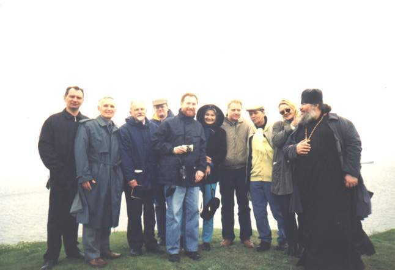

| Перед началом экскурсии |
|
.Христенко, В.Москвин, Н.Нестерова, Н.Струве, Н.Музыка, отец Михаил, М.Бузник |
|
М.Бузник, В. Ивановский, Н. Музыка, на заднем плане И.Ткач и О.Беликов |
|
А. Золотухин и В. Москвин |
| Снимки на фоне Гипаниса |

В. Москвин |
|  |
| На центральном теменосе |
| Возле кургана Зевса (II в. н.э.) |
|
перед курганом В.Христенко и В.Москвин |
|
на кургане Н.Струве, М.Бурцев, Н.Нестерова, В.Москвин |
| Вид на Ольвию с Зевсового кургана |
| В склепе Еврисивия и Ареты (II в. до н.э.) |
|
М.Бурцев |
| После экскурсии в гостях у Володи и Ульяны Савиных |
|
М.Бурцев, М. Щербаченко и Н.Нестерова |
|
В.Ивановский, В.Москвин и Н.Музыка |
|
Отец Михаил, Михаил Бурцев, Илья - сын отца Михаила, Никита Струве |